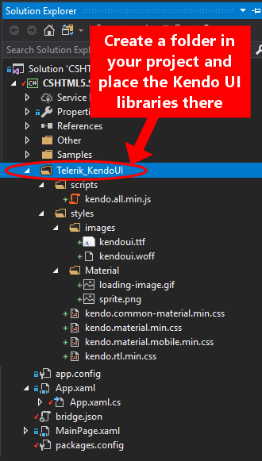

Kendo UI wrappers for OpenSilver
How to use the Kendo UI Grid in an OpenSilver project
Reference the NuGet package "CSHTML5.Wrappers.KendoUI.Grid" (or "CSHTML5.Migration.Wrappers.KendoUI.Grid" if you are migrating from Silverlight or WPF)
Download the "Kendo UI for jQuery" libraries from the Telerik website at: http://www.telerik.com/download/kendo-ui
You should now have downloaded a file with a name similar to "kendoui.for.jquery.2019.1.220.trial.zip".
Extract the libraries that you have downloaded at the previous step and place them into a subfolder of your project. Note: while you can always extract all the files, only a few files are actually required. Here is a screenshot that shows which files are required:
Make sure that the "Build Action" of the files that you have added is "Content" (in particular, the default build action of the .ttf and .woff files is usually "none", so you need to change it to "Content"). To do so, select a file in the Solution Explorer and press F4 to see its properties.
Add some lines of code to specify the location where you have placed the libraries in your project (ie. the files that you have added at the previous step #3). To do so, copy/paste the following code anywhere in your app (preferably in App.xaml.cs):
kendo_ui_grid.kendo.ui.Grid.Configuration.LocationOfKendoAllJS = "ms-appx:///YourProjectName/Telerik_KendoUI/scripts/kendo.all.min.js"; kendo_ui_grid.kendo.ui.Grid.Configuration.LocationOfKendoCommonMaterialCSS = "ms-appx:///YourProjectName/Telerik_KendoUI/Telerik_KendoUI/styles/kendo.common-material.min.css";
kendo_ui_grid.kendo.ui.Grid.Configuration.LocationOfKendoMaterialCSS = "ms-appx:///YourProjectName/Telerik_KendoUI/Telerik_KendoUI/styles/kendo.material.min.css"; kendo_ui_grid.kendo.ui.Grid.Configuration.LocationOfKendoMaterialMobileCSS = "ms-appx:///YourProjectName/Telerik_KendoUI/Telerik_KendoUI/styles/kendo.material.mobile.min.css";
kendo_ui_grid.kendo.ui.Grid.Configuration.LocationOfKendoRTLCSS = "ms-appx:///YourProjectName/Telerik_KendoUI/Telerik_KendoUI/styles/kendo.rtl.min.css";Place the Grid in your XAML. Here is an example:
<Border xmlns:kendo="clr-namespace:kendo_ui_grid.kendo.ui;assembly=CSHTML5.Wrappers.KendoUI.Grid">
<kendo:Grid x:Name="KendoGrid" Height="300"/>
</Border>
Set the ItemsSource property of the KendoGrid to populate it with data.
Optionally, you can change the settings of the KendoGrid. To do so, please refer to the following example (note: make sure to place this piece of code in the "Loaded" event of the Page or UserControl to ensure that the Kendo UI Grid has been instantiated before changing its settings):
using kendo_ui_grid.kendo.data;
using kendo_ui_grid.kendo.ui;
private async void MainPage_Loaded(object sender, RoutedEventArgs e)
{
await KendoGrid.JSInstanceLoaded; // Wait until the underlying JS instance of the Kendo UI Grid has been loaded
KendoGrid.setOptions(new GridOptions() { pageable = new GridPageable() { refresh = true, pageSizes = true, buttonCount = 5 }, editable = true });
KendoGrid.dataSource.pageSize(4);
}
Sample application
For a sample application, please view the branch named "bridge-third-party-demos" of the "CSHTML5.Samples.Showcase" application, at:
https://github.com/cshtml5/CSHTML5.Samples.Showcase/tree/bridge-third-party-demos
Please note that, for legal reasons, the JavaScript libraries of Kendo UI are not included in the sample application, so you still need to copy them manually using the steps described above.
To see the C# and XAML files that use the Kendo UI controls, please visit:
Source code
You can view and fork the source code of the Kendo UI wrappers for OpenSilver on GitHub at:
https://github.com/cshtml5/CSHTML5.Wrappers.KendoUI
Contact Us
Please click here for contact information.